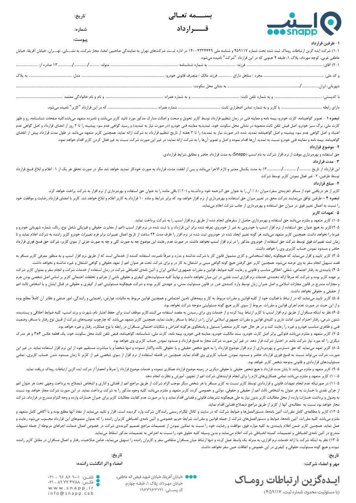
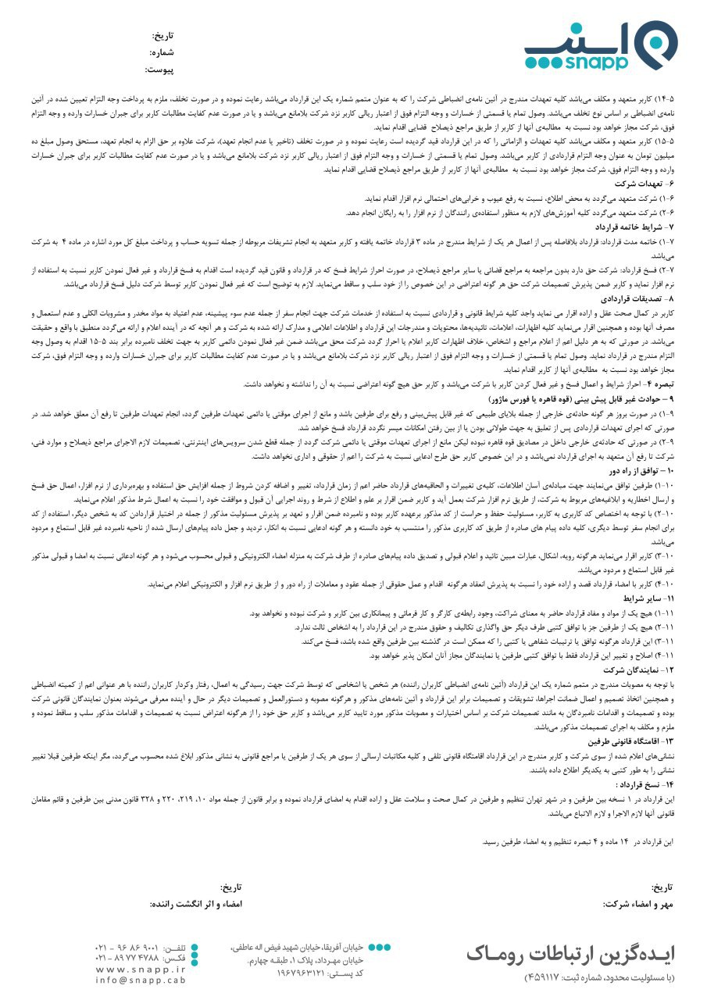
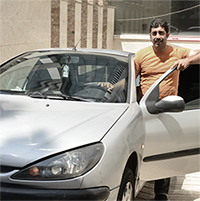

به خانواده اسنپ بپیوندید
به کمک اسنپ به آسانی درآمد بالا کسب کنید
اسنپ پل ارتباطی میان شما و مسافران در شهرهای اراک، ارومیه، اصفهان، اهواز، بابل، بندرعباس، تبریز، تهران، رشت، ساری، شیراز، قائمشهر، قزوین، قم، کرج و مشهد است . با استفاده ازخودروی خود در ساعات کاری آزادتان، مسافرین اسنپ را به مقصد برسانید و کسب درآمد کنید.
قرارداد ثبت نام رانندگان در ناوگان اسنپ


آدرس دفاتر ثبت نام
اراک:
- میدان شریعتی، خیابان شریعتی، ورودی شهرک گردو، ساختمان خلیج فارس، طبقه اول
- ساعات کاری: شنبه تا چهارشنبه ۸:۳۰ تا ۱۸ / پنجشنبهها ۸:۳۰ تا ۱۳
ارومیه:
- چهارراه مخابرات، خیابان برق، روبروی فروشگاه جواهر، کوچه شهید حسن زاده، ساختمان ۱۶، طبقه دوم، واحد یک و دو
- ساعات کاری: شنبه تا چهارشنبه ۸:۳۰ تا ۱۷ / پنجشنبهها ۸:۳۰ تا ۱۲
مدارک مورد نیاز
- مدارک شناسایی (کارت ملی و شناسنامه)
- گواهینامه
- گواهی عدم سوء پیشینه کیفری
- مدارک خودرو (کارت خودرو و برگ سبز خودرو)
- بیمهنامه معتبر خودرو
- معاینه فنی برای خودروهای مدل پایینتر از فروردین ۹۲
- قبض تلفن یا آب یا برق محل سکونت
از زبان رانندههای اسنپ...
علی یادگاری
همکار اسنپ از خرداد ۹۵، میانگین 126 سفر ماهانه
درخواستهای اسنپ خیلی زیاده همیشه وقتی میرسم به مقصد و سفر رو تموم میکنم باز هم درخواست جدید میاد و میتونم سفر بعدی رو از همونجا شروع کنم. دیگه لازم نیست یه مسیری رو برگردم تا بتونم مسافر جدید داشته باشم. این باعث میشه در طول روز سفرهای بیشتری داشته باشم و در آمدم هم بیشتر باشه.

علی مصطفوی
همکار اسنپ از خرداد ۹۴، میانگین 181 سفر ماهانه
من خودم نرمافزار خوندم و وقتی متوجه شدم سیستم اسنپ پیادهسازی شده خیلی خوشحال شدم و ازش خوشم اومد. اسنپ هرروز داره پیشرفت میکنه و هرروز بهتر از دیروز میشه. با اسنپ من میتونم ساعت کاریم رو خودم انتخاب کنم و برای روزم برنامه ریزی داشته باشم که خیلی مهمه.